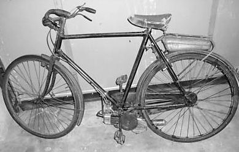
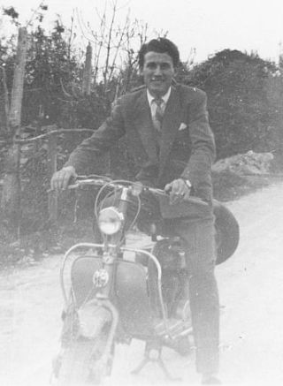
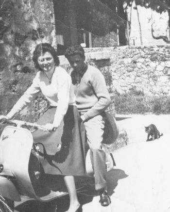
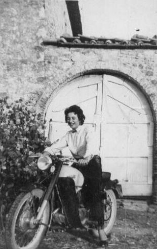
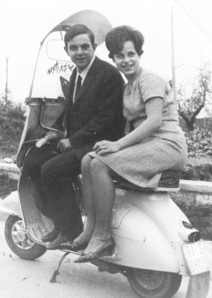
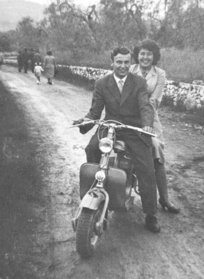

Quercegrossa (Ricordi e memorie)
CAPITOLO XI - COSE D'ALTRI TEMPI
Torna all'Indice Cose d'altri tempi
Vai all'Indice dei Capitoli
Servizi
(L'Acqua)
(Illuminazione)
(La Posta)
(Il Telefono)
(La Strada)
(Trasporti pubblici)
(Mezzi privati)
(Botteghe)
Mezzi privati
Nell'insieme però il servizio pubblico e privato, sia a trazione animale che meccanica, era articolato in una assai ridotta fascia oraria per cui riusciva solo parzialmente a soddisfare i bisogni di una popolazione rurale, nonostante la mobilità fosse molto limitata. Se, tutto sommato, le corse erano sufficienti per far sbrigare alcune faccende, per far raggiungere i mercati a capocci e fattori e per fare acquisti, si rivelavano assolutamente inadeguate specialmente dal secondo dopoguerra per coloro che iniziavano a trovare impieghi e lavori in città ed erano costretti, quindi, ad usare a ogni stagione la bicicletta, ricorrendo al mezzo pubblico o al Mencherini solamente quando conveniva compatibilmente all’orario di lavoro.
Lo spostarsi sulle due ruote si era diffuso nelle campagne dopo la Prima guerra mondiale, dapprima timidamente poi negli anni Trenta divenne popolare soprattutto per operai e minatori, ma anche per molte famiglie di contadini che possedevano una bicicletta. Nel 1935/36, Gina Rossi e Natalina Giachini si impiegano nella fabbrica di pipe ubicata al Palazzo dei Diavoli e raggiungono il posto di lavoro con la propria bici partendo la mattina alle sette con qualsiasi tempo. Così era anche per Spartaco Carletti, apprendista dal Lolini e per altri ragazzi iscritti alle varie scuole pochi anni dopo.
Gina Rossi nel 1936/37 al tempo del suo impiego nella fabbrica di pipe a Siena che raggiungeva con la sua bicicletta dai freni a bacchetta e i larghi copertoni. Si nota il regolare piano stradale sterrato, racchiuso tra due muri, la colonna del telegrafo sulla carreggiata dipinta di bianco e nero alla base, e la strettoia all'altezza della scuola che formava una sensibile curva modificata poi con l'asfaltatura della strada. Vi sono sulla strada alcuni escrementi di bove, inevitabili dato il continuo passare di carri e barrocci.
Dal 1948/50 un bel gruppo di giovani di Quercegrossa trova impiego in vari settori dell'artigianato senese e giornalmente si recano a lavoro in bicicletta. La sera prima dell'imbrunire ripartono e si aspettano a Camollia prima di inoltrarsi nella strada sterrata della Castellina, lasciandosi alle spalle gli ultimi lampioni di Fontebecci.
I mezzi a disposizione, dei quali il pregio maggiore era la robustezza che faceva peso, mettevano a dura prova la muscolatura dei ciclisti soprattutto delle donne e di Piera Rossi: "Andavo a Siena a lavorare in bicicletta e la riparavo dal Mari. Una volta la mia si era rotta e provvisoriamente mi diede in cambio una bici di 15 chili che pareva una carretta: che fatica!”. Non sempre luci e freni erano a posto: "Quella volta a Camollia frena, frena, infilai un omino che mi disse un po' alterato: "Portami via i coglioni!". Quando scendeva il buio si azionava la dinamo che fregando sul copertone aumentava la fatica, ma sviluppava un piccolo fascio di luce sufficiente per vedere tre metri di strada. Nelle serate di pioggia i nostri apprendisti prendevano la Sita delle 17.
La distanza dei Comuni costringeva a lunghe pedalate in bicicletta che spesso diventavano gite di piacere in compagnia, come ricorda Bruno Sestini: "S'andava al Comune di Castelnuovo, ricordo un viaggio con Ilda Nencioni, Eugenia del Giannini e altre persone. Una volta si passò da Camollia e giù diritti in città. Poi al Pian delle Cortine cominciò a piovere forte e si prese tutta. Quando c'era Eugenia, passando da città, pedalava con le sottane alte e si vedevano i mutandoni a mezze cosce e tutti guardavano. Quando poi scendeva per la fatica non c'era verso di farla ripartire". Ci furono imprese che darebbero del filo da torcere ai ciclisti di oggi come quella di Giulio Carli, nell'immediato dopoguerra quando si dovette recare a Castelnuovo: "C'era la tessera e partendo da Petroio mi diressi a Castelnuovo B.ga per la pratica amministrativa. Mancavano dei dati, ma non mi scoraggiai. Ripartii verso il Pian delle Cortine e via Siena ritornai a Petroio. Presi quanto occorreva e ritornai a Castelnuovo dove sbrigai la pratica e passando nuovamente da Siena giunsi nel pomeriggio a Petroio".

La ricerca dell'industria Barberi Primo, per offrire un mezzo economico che avesse le caratteristiche di una moto ma che fosse di prezzo contenuto alla portata di tutti, generò nel 1945 un ibrido che non era né bicicletta né moto: il Mosquito a rullo. Il principio che lo muoveva era semplicissimo, trattandosi di un rullo azionato da un motorino che premendo sulla ruota posteriore gli trasmetteva il movimento rotatorio nella direzione di marcia.
Un modello del famoso Mosquito
I minatori di Quercegrossa videro in questo mezzo un’utile novità per i loro trasferimenti e decisero di acquistarlo insieme per ottenere un buono sconto: lo pagarono 22.000 lire l'uno.
Si rivelò utilissimo in pianura e col tempo buono, ma aveva qualche problema nelle salite per cui dovevi quasi sempre aiutarlo, pedalando, e con la strada molle il rullo si impastava slittando continuamente. Servì al bisogno per alcuni anni poi sparì velocemente, sostituito da motorini più potenti come il famoso Motom 48 cc. di cilindrata e altri.
Per buona parte degli anni Cinquanta perdurò anche l'uso della bicicletta per motivi di lavoro o studio, poi venne soppiantata da moto e macchine e da un più esauriente servizio fornito dalla SITA con passaggi in ore adeguate a lavoratori e studenti. Alla fine questo glorioso mezzo servì solo al divertimento di bambini e ragazzi e all'uso locale e qualche bici finì per arrugginire.
Se ben ricordo gli ultimi a usare la bicicletta come mezzo di trasporto per lo studio furono Roberto Mori ed Enzo Stazzoni che frequentarono la scuola agraria di Scacciapensieri nel 1962/63.
La Norton di casa Mori acquistata nel 1939. La rivedo nel 1955/58, ormai fuori uso, appoggiata al muro, tra tanti ferracci, nel buio dello Stanzone, finita come giocattolo per noi ragazzi.
Sotto Bianca e Annunziata Mori a cavallo del mezzo, e il retro della foto scritto a ricordo dell’avvenimento.
A destra: Franco Carusi mostra la sua fiammante Vespa. A sinistra: Bernardino Castagnini con la BSA del babbo.
Tra i nuovi mezzi a motore in ascesa, in una società che stava faticosamente cercando di progredire, ci furono la Lambretta e la Vespa. La loro originalità li mise presto in concorrenza con le moto delle varie marche, come la Gilera e la Mi-Val, che con la cilindrata 125 stavano imponendosi nel mercato italiano. Infatti, gli anni tra il 1955 e il 1960 che precedettero il boom economico e il dominio delle quattroruote, videro la grande diffusione delle motociclette. Molti furono gli Isomoto, almeno 6/7 acquistati a Quercegrossa e dintorni, poi Gilera, Motobi (Castagnini Corrado), Mondial Moto (Finetti Dino) e Guzzi. L'Isomoto estremamente pratico nella guida l'ebbero tra i tanti Silvano Socci e Poldo Fanetti di Passeggeri. Lambrette e Vespe fecero la loro parte anche a Quercegrossa dove apparvero numerose soprattutto dopo l'asfaltatura della strada che rese più sicura la tenuta del mezzo.
Una delle prime Vespe di Quercegrossa venne acquistata da Vico Barucci. Qui siamo nel 1957/58 dove Vico sembra ammirare soddisfatto la Vespa e la figlia Donatella. Anche se possedeva il mezzo a motore, Vico usò sempre la bicicletta per andare al lavoro e tutte le sere la portava in casa.





Nelle foto in alto: Benito Bandini in Lambretta nel 1954 e Dedo con Carla Buti in Vespa.
In basso: Pierina Rossi sulla Bianchi del fidanzato Renato.
Bernardo e Lorenza in Vespa.
A sinistra: Armando in Lambretta con Luigina Costanzi, un pomeriggio per la Festa di Petroio.
Per quanto ci è dato a sapere, la prima automobile a Quercegrossa venne acquistata dai Mori nel 1933. Era una Ford celeste a gomme piene, certamente usata, che tennero pochissimo per sostituirla con la Balilla 509, altrettanto usata, che alcuni hanno ancora ben presente.
Una mattina del 1934 lo zio Berto parlando disse in piazza: "Oggi c’ho un viaggio buffo da fare, c'ho da portare un prete e un carabiniere". Il prete era lo zio Gigi, studente a Roma, e il carabiniere Alberto Tacconi, in partenza entrambi col treno dalla stazione di Siena. La macchina, forse per la sua scarsa utilità o per essere un catorcio, venne consegnata come ferraccio nel 1940 in occasione della raccolta del rame e del ferro per la patria. Anche il parroco don Luigi comprò la macchina nel 1935. Era una Balilla pagata poco meno di 10.000 lire; fungeva da suo autista Dino Mori e la utilizzava per la parrocchia e per tanti altri diversi servizi. Il garage era quella stanza accanto alla stalla, la porta di destra, dove vi teneva anche il calesse.
Acquistata l'automobile don Grandi fece subito un giro turistico con Dino e Spartaco Carletti. Partiti la mattina presto da Quercegrossa percorsero la strada di Volterra, Cecina e Livorno e tornarono la sera tardi. Anche nella circostanza del matrimonio di Dino e Settimia Brogi la Balilla servì per il viaggio di nozze per gli sposi.
Al passaggio del fronte i tedeschi gli portarono via le ruote sostituite poi da ruote d'aereo aggiustate alla meglio. Ma Dino prigioniero in Germania tardava a rientrare, così don Luigi vendette la sua auto.
Una Balilla posteggiata all'inizio della discesa per il Mulino e calzata prudentemente con una grossa pietra. Anna Tacconi e il piccolo Mario in posa. Potrebbe essere la Balilla di don Luigi Grandi, lì posteggiata dall'autista Dino Mori.
Di quegli anni Quaranta si rammentano le auto di proprietà Bindi, il Topolino del Mosca e quella del senatore Sarrocchi a Passeggeri. Si devono attendere gli anni del dopoguerra per vedere aumentare il modestissimo parco macchine del paese. Dopo alcuni anni passati sulla moto con carrozzino, il sensale Guarducci comprò una macchina, una Fiat che teneva in garage nella falegnameria dei Mori. Era una macchina con le frecce esterne che si alzavano, come un braccio, per indicare il cambio di direzione. Anche il fattore Tacconi Alberto è ricordato sulla sua Giardinetta con le fiancate attraversate da strisce di legno chiare tipiche di quelle macchine e la teneva nel garage, una volta stalla. Naturalmente anche il sopraricordato noleggiatore Mencherini fa parte di questa esigua schiera di automobilisti; già a Cuneo aveva comprato la Giardinetta e poi la 1100. Era, come si può facilmente comprendere, una comodità riservata a pochi, ma già si apprestavano gli anni Sessanta che porteranno un aumento delle disponibilità economiche per tante famiglie; come conseguenza le quattro ruote aumenteranno in modo considerevole spodestando in breve la prevalenza delle moto. Ancora alla fine degli anni Cinquanta la strada era un luogo quotidiano di gioco per noi ragazzi e di veglia serale per le donne che facevano la calza alla luce dei lampioni. Le rare macchine non intralciavano né il gioco né la veglia, poi tutto ciò divenne impossibile, come ci dimostra la statistica sulla circolazione delle macchine in Italia: 1936 = 244.000; 1956 = 1.382.000; 1966 = 7.055.000.
La Fiat 600 di Dino Finetti a Macialla con Marcella alla guida. Nella foto sottostante la "500" di Mario Noccialelli all'Olmicino e la nonna Sequi con la "600" di famiglia alla Magione.
Conclusione
Da sempre i nostri bisnonni si erano mossi a piedi nelle campagne usando il carro soltanto per il trasporto di beni e materiali e i servizi di diligenza, là dove erano, soltanto in circostanze eccezionali. Era gente abituata a camminare e il camminare faceva parte del loro essere. Non temevano tratti di 15/20 chilometri, affrontati senza nessun timore, da formidabili camminatori qual erano. Non c'è bisogno di ricorrere a circostanze eccezionali come le due guerre, nelle quali ci furono persone che tornarono a piedi da Bari o da altri luoghi molto distanti, per far risaltare questa grande capacità di spostamento, che può apparire straordinaria, ma faceva parte del vivere del tempo, dei suoi ritmi a misura d'uomo. Si andava e si tornava da Siena a piedi; si andava a Castellina in Chianti senza problemi, magari per qualche festa; c'erano poi i fidanzati che spesso raggiungevano l'abitazione dell'amata dopo aver percorso 10/15 Km e tornavano a notte inoltrata.
C'erano per tutto questo muoversi una infinità di sentieri e viottoli attraverso boschi e campi, percorsi quasi in linea diretta e perciò riducendo notevolmente le distanze. L'impiego di mezzi motorizzati, sempre più diffuso, fece scomparire anche questo modo di spostarsi da un luogo all'altro.
Inizio pagina
Indice Cose d'altri tempi
Vai all'Indice dei Capitoli
|